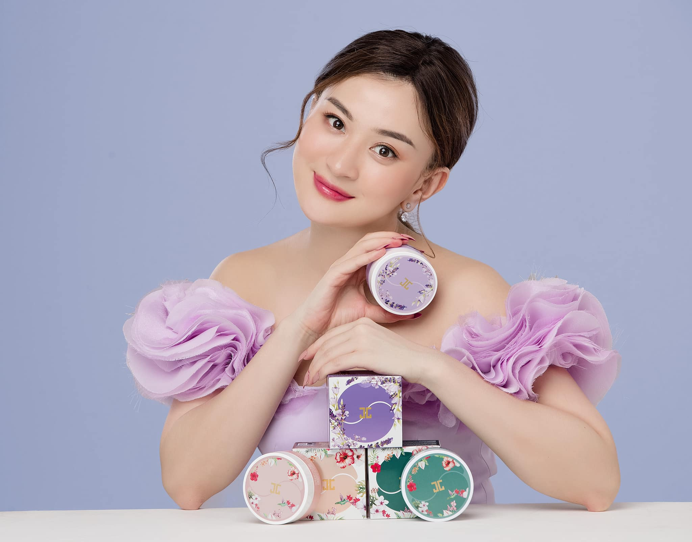

|  | English Name | Wutt Hmone Shwe Yi |
| Born | 10 Aug 1988(age 34)Mogok,Myanmar | |
| Nationality | Burmese | |
| Alma mater | Dagon University(English Major | |
| Occupation | Actress | |
| Years active | 2005-present | |
| Height | 5' 2" | |
| Relation status | Single | |
| Parents | Win Thein Naing Mi Mi Lwin |
| Years | Film | Director | Co-stars |
|---|---|---|---|
| 2014 | Thein Han Phoenix | Nay Toe | |
| Wyne | Pyay Ti Oo,Moe Hay Ko | ||
| 2016 | Wine | Aung Ye Lin,Thet Mon Myint,Zin Wine | |
| Chartchai Ketnust ( Thai director ) | Nay Toe,Sai Sai Kham Leng,Naam Whan Pailporn | ||
| 2017 | Nyut Myanmar Nyi Nyi Aung | Nay Toe,Myint Myat | |
| 2018 | Mee Pwar | Nay Min,Nay Chi Oo | |
| 2019 | Sin Yaw Mg Mg | Ryu Sang Wook,Kyaw Htet Aung,May Than Nu |